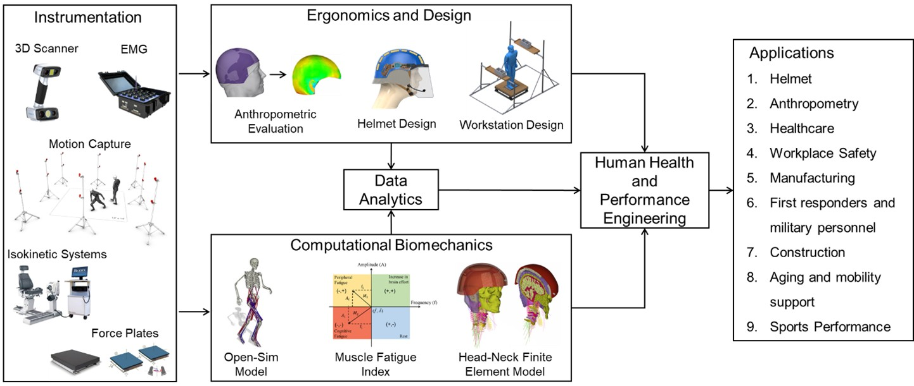
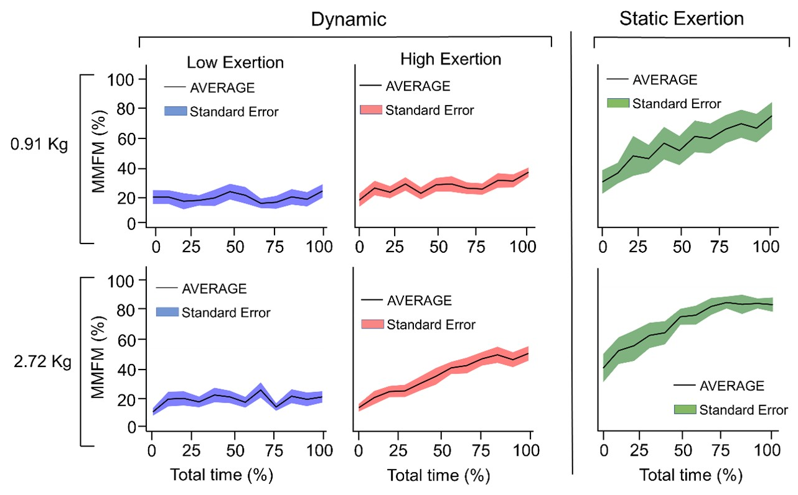
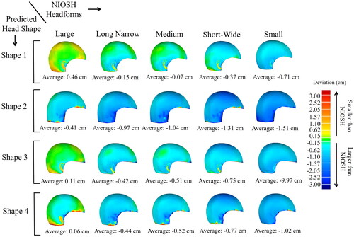
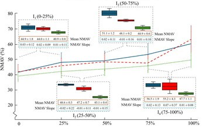
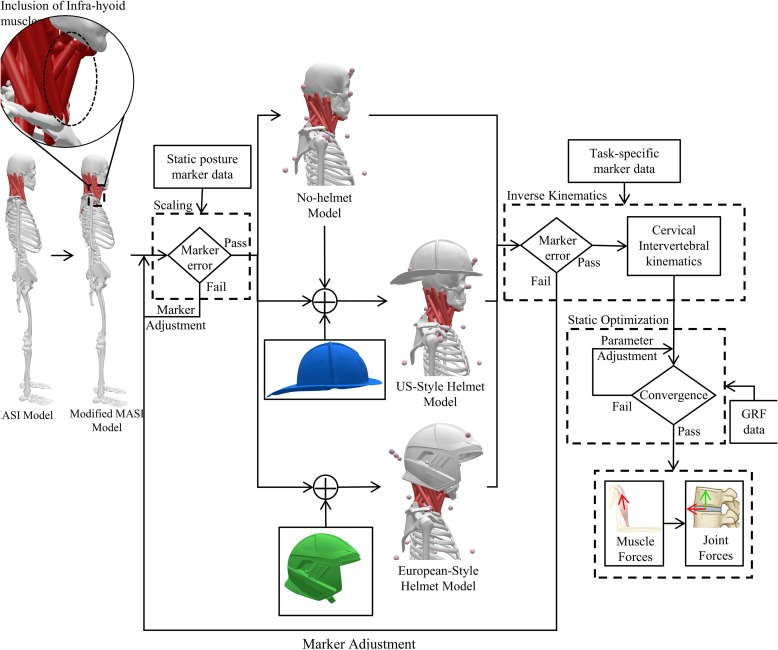
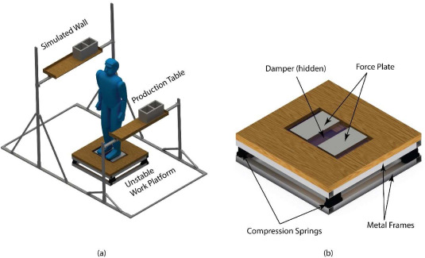
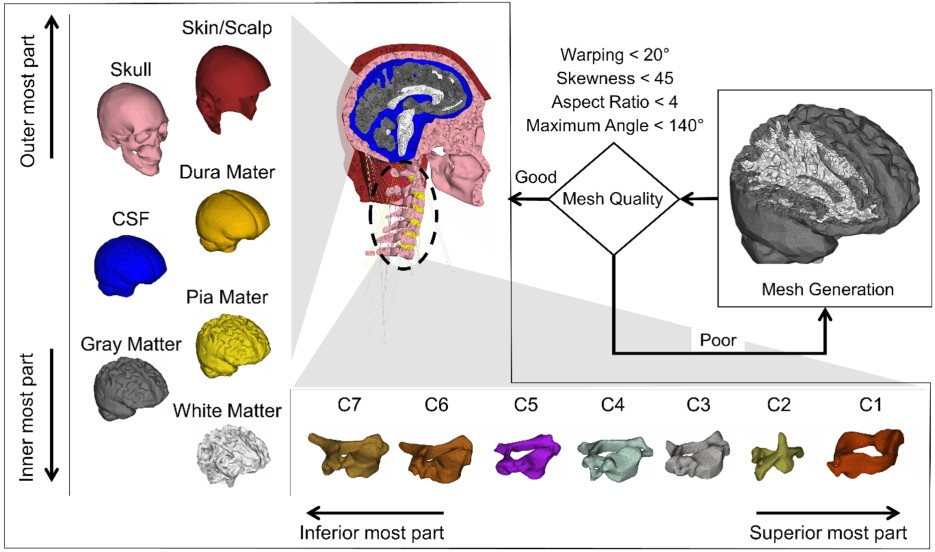
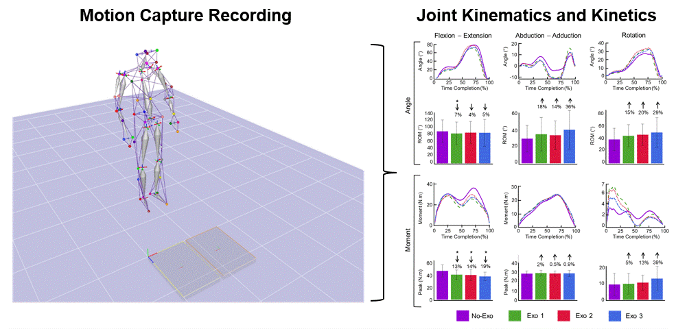
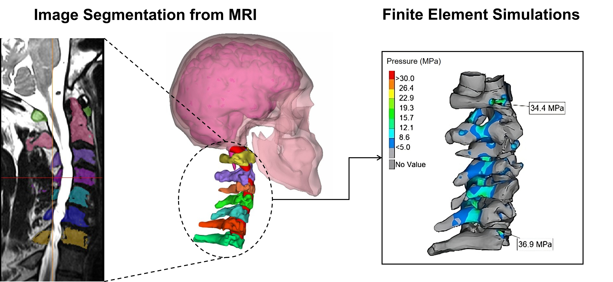
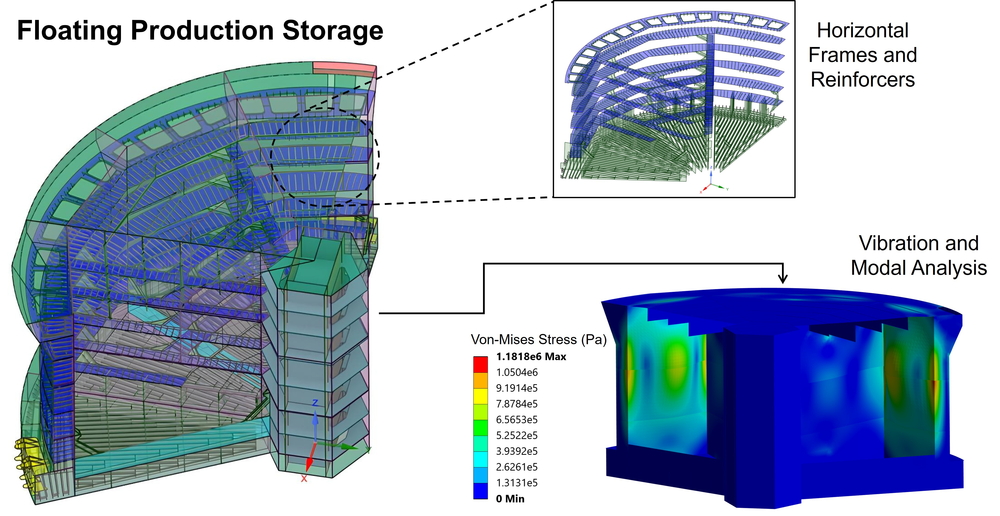

About Me
Hello, my name is Leonardo Wei, a recent Ph.D. graduate in Industrial, Manufacturing, & Systems Engineering from Texas Tech University, passionate about biomechanics, human motion, ergonomics, and mechanics. Prior to my Ph.D. I have obtained a bachelors degree in Mechanical Engineering from Pontifical Catholic University of Rio de Janeiro, with a specialization in fluid dynamics.
Research
My research expertise lies at the intersection of experimental and computational biomechanics, where I integrate methods and knowledge from ergonomics and design, machine learning, computational mechanics, and musculoskeletal modeling, with the purpose of enhancing human health and performance in both clinical and non-clinical settings.

Schematic Representation of My Research Approach
I am currently evaluating how the use of exoskeletons during complex occupational tasks influences muscle motor modulation and postural balance, particularly in confined workspaces and elevated working platforms.
News
- Oct 2025 — Podium Presentation at the Human Factors and Ergonomics Society Conference, Chicago, USA
- Sep 2024 — Podium Presentation at the Human Factors and Ergonomics Society Conference in Phoenix, USA
- Aug 2022 — Podium Presentation at the American Society of Biomechanics Conference in Ottawa, Canada
Publications
Wei, L. H., & Chowdhury, S. K. (2025). An electromyography-based multi-muscle fatigue model to investigate operational task performance. Computer Methods in Biomechanics and Biomedical Engineering, 1-17. Available at https://doi.org/10.1080/10255842.2025.2510369.

Wei, L. H., Sudeesh, S., Chakroborty, S., & Chowdhury, S. K. (2025). A comprehensive methodological framework for 3D head anthropometric shape modeling of a small dataset. Ergonomics, 1-16. Available at https://doi.org/10.1080/00140139.2025.2518306.

Wei, L. H., Paulon, G. M., Sarker, P., & Chowdhury, S. K. (2025). Sustained-till-exhaustion effects of firefighter helmets on neck muscle fatigue mechanism. Ergonomics, 1-17. Available at https://doi.org/10.1080/00140139.2025.2548004.

Paulon, G. M., Sudeesh, S., Wei, L. H., & Chowdhury, S. K. (2024). Firefighter helmets and cervical intervertebral Kinematics: An OpenSim-Based biomechanical study. Journal of Biomechanics, 176, 112364. Available at https://doi.org/10.1016/j.jbiomech.2024.112364.

Zheng, L., Pan, C., Wei, L., Bahreinizad, H., Chowdhury, S., Ning, X., & Santos, F. (2024). Shoulder-assist exoskeleton effects on balance and muscle activity during a block-laying task on a simulated mast climber. International journal of industrial ergonomics, 104, 103652. Available at https://doi.org/10.1016/j.ergon.2024.103652.

Bahreinizad, H., Paulon, G. M., Wei, L., & Chowdhury, S. K. (2025). An MRI-derived head-neck finite element model: H. Bahreinizad et al. Biomechanics and Modeling in Mechanobiology, 1-21. Available at https://link.springer.com/article/10.1007/s10237-025-02013-x.

Main projects
National Institute for Occupational Safe and Health
In this project, I led human-subject data collection to assess how three shoulder exoskeletons—the ShoulderX (Exo 1), EksoBionic (Exo 2), and Levitate (Exo 3) —affect lifting biomechanics during cinderblock handling. Using high-resolution motion capture, I recorded whole-body movement and processed the data through inverse kinematics and inverse dynamics to obtain joint angles and moments.

Department of Homeland Security
This project involved multidisciplinary expertise to translate medical solutions into engineering applications by performing image segmentation from MRI scans to generate computational models of the human neck and conducting stress analyses to evaluate cervical loading.

DORIS Internship
As a Project Engineer Intern, one of my primary responsibilities was conducting fatigue simulations for an FPSO platform. This work involved developing structural frames and reinforcements to mitigate damage in critical components and performing comprehensive fatigue life and damage analyses to identify areas requiring additional structural support.
